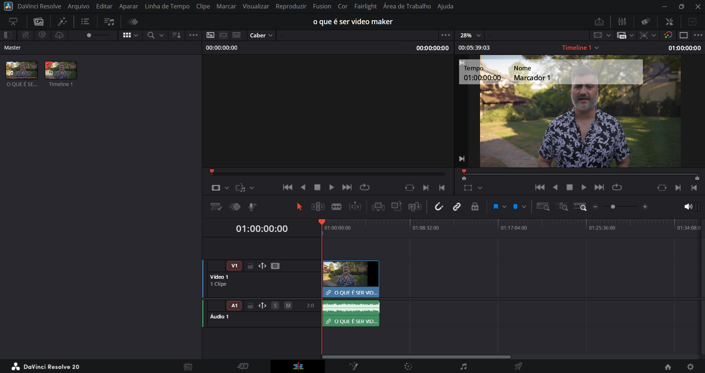

Passo 2: Acesse a Cut Page (Página de Corte) ou Edit Page (Página de Edição)
O DaVinci Resolve oferece duas páginas principais para edição: a "Cut Page" (Página de Corte)
para edições rápidas e a "Edit Page" (Página de Edição) para um controle mais detalhado.
Para este tutorial básico, vamos usar a Edit Page, pois ela é a mais comum para iniciantes.

Passo 3: Crie uma Nova Linha do Tempo
Antes de começar a editar, você precisa de uma "Timeline" (Linha do Tempo). É aqui que você organizará seus clipes.
- No painel "Media Pool" (canto superior esquerdo), selecione todos os clipes que deseja usar inicialmente.
- Clique com o botão direito do mouse sobre os clipes selecionados.
- Escolha "Create New Timeline From Selected Clips" (Criar Nova Linha do Tempo a Partir dos Clipes Selecionados).
Uma nova linha do tempo será criada com seus clipes já dispostos na ordem em que foram selecionados.